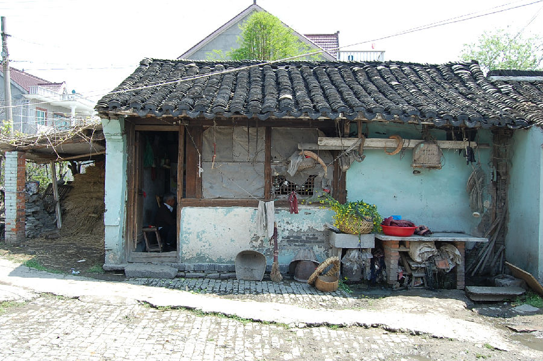
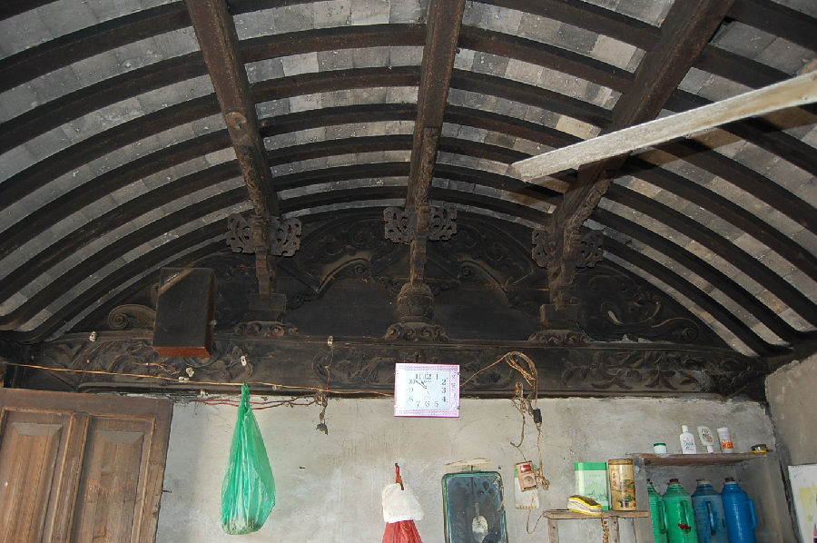

嘉兴市文物保护网 · 市级文物保护点 · 2020-11-02 · 原文


范滩村钱氏书屋位于嘉兴市秀洲区王江泾镇范滩村16组东南寺寺后浜，据屋主介绍及其形制判断为清早期建造，原为地主家小孩的书屋，1956年转卖给现钱氏人家。在抗日战争期间，南开间还曾用于储存粮食及躲避日军，现均当厨房使用。书屋坐西朝东，砖木结构，为二开间平房，硬山顶，面阔5.91米，进深3.4米。南开间原为暗隔，现设有灶头，作厨房间使用。北开间屋顶内部为卷棚顶，梁枋有雕花，两侧有隔扇窗户，可以拆卸，东侧窗户外还设有美人靠。屋顶为硬山顶，屋面铺小青瓦，地面铺设小青砖。钱氏书屋构造讲究，做工精巧，小巧玲珑，带有江南建筑的典型风格，具有较高的历史和艺术价值。2009年公布为嘉兴市文物保护点。